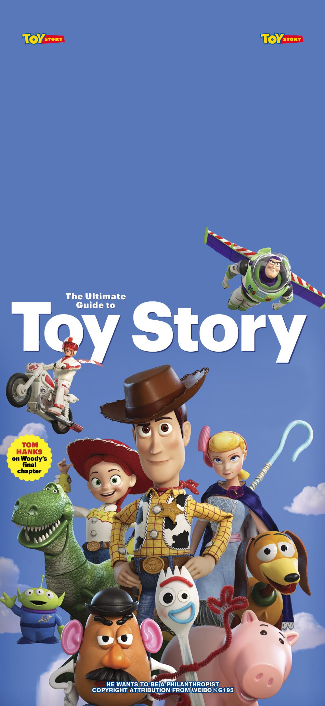

TOM and JERRY
director:William Hanna/Joseph Barbera
Tom and Jerry is a timeless American cartoon. The show focuses on Tom, a cat eager to catch Jerry, his tiny mouse roommate. Their daily life is filled with hilarious chases and clever pranks. Notably, it uses little dialogue, relying on slapstick humor and vivid actions to delight generations of viewers worldwide.
Main Characters

Spike
voice:\
Spike is a strong bulldog from the cartoon Tom and Jerry. As a key side character, he hates Tom’s chaotic pursuits of Jerry that disturb his naps. He usually punishes Tom severely for the trouble. Notably, Spike is a gentle and protective father, and he will get furious if anyone hurts his little son Tyke.